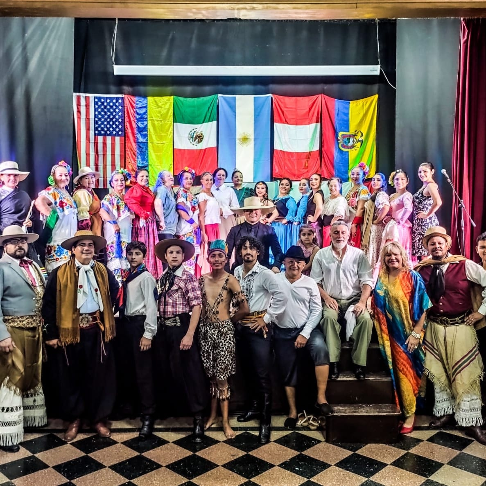

Escuela de Teatro El Paño Escénico

Fodiem Cultura te invita a ser parte de nuestra Escuela de teatro, "El paño Escenico" destinada a niños, adolescentes y adultos. Las clases se dictarán en Goldoni teatro ubicado en Francisco Abaca 432, La Emilia los días Lunes y Miércoles. Las clases serán coordinadas por Sergio Piazza. HACE TEATRO!! Informes e inscripcion: 3364358686
Escuela de Danzas Tranquera abierta

Fodiem Cultura te invita a ser parte de nuestra Escuela de Danzas, "Tranquera Abierta" destinada para alumnos de 15 años en adelante. Las clases se dictarán en la Escuela Técnica Nro 5, La Emilia los días Miércoles de 19:30 a 21:30 hs Informes e inscripcion: 3364004501
Festival internacional de danzas El mundo danza a orillas del Parana
El sábado 4 de febrero se llevó a cabo en el Centro de Jubilados de La Emilia la cuarta edición del Festival Internacional El mundo danza a orillas del Paraná. Del mismo participaron 24 delegaciones de diferentes países del continente americano que desplegaron sus danzas, costumbres y tradiciones a una sala repleta de espectadores. Agradecemos la concurrencia y el apoyo de la comunidad Emiliana y los esperamos pronto para la nueva edición del festival